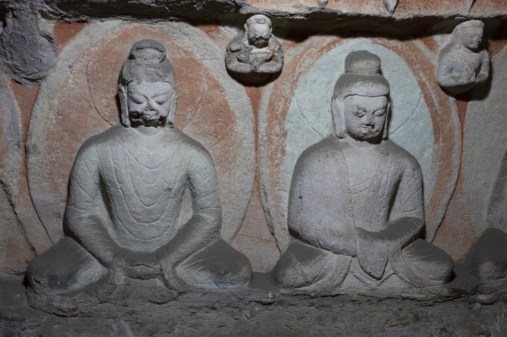
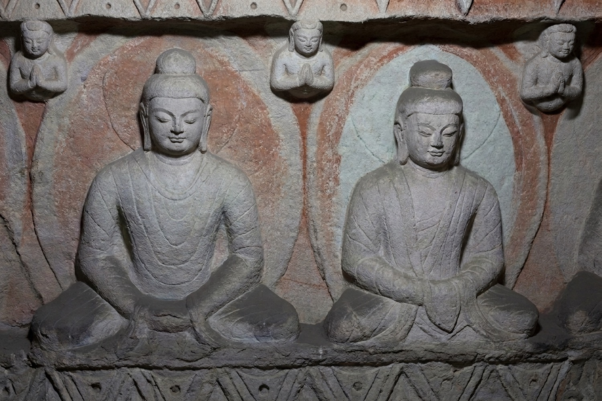
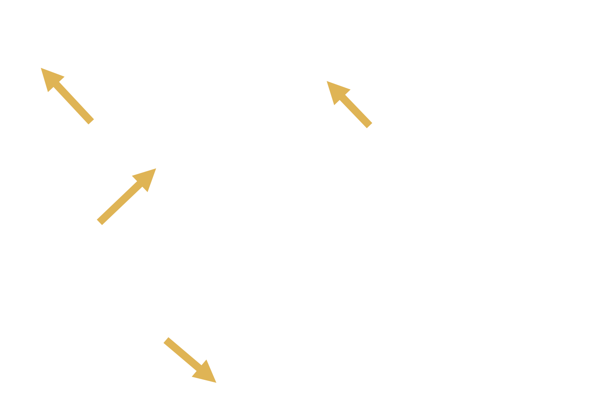
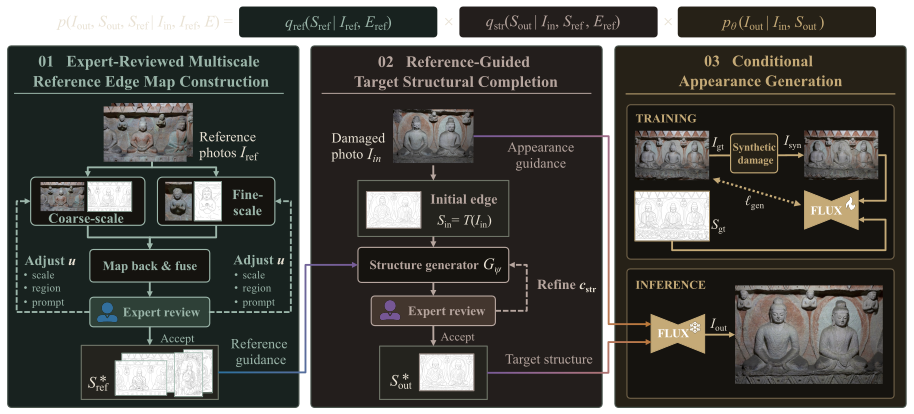
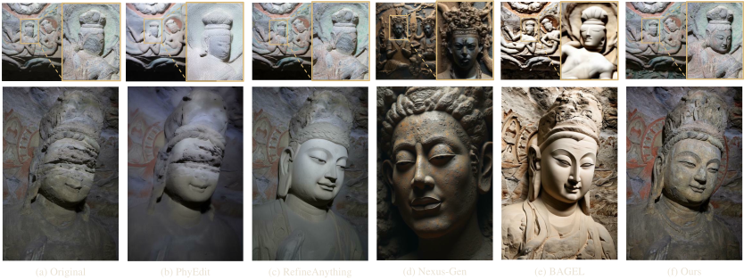
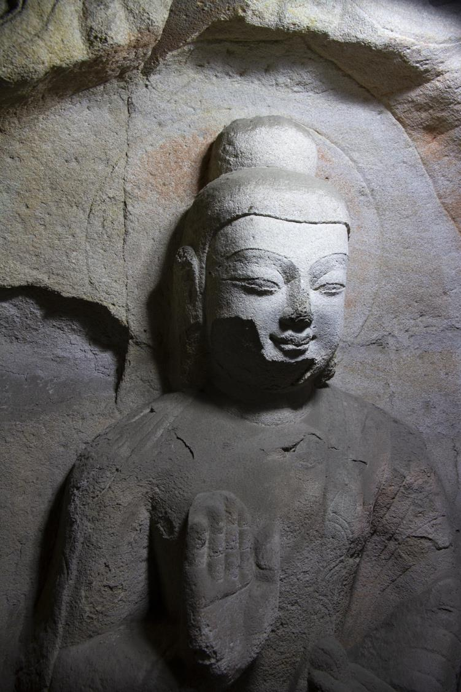
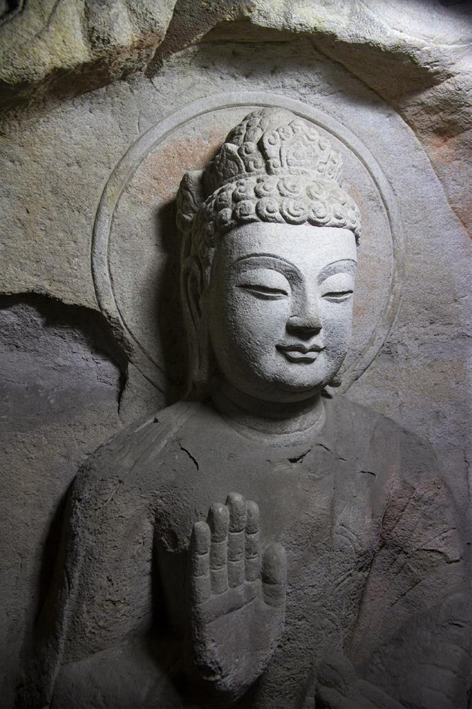
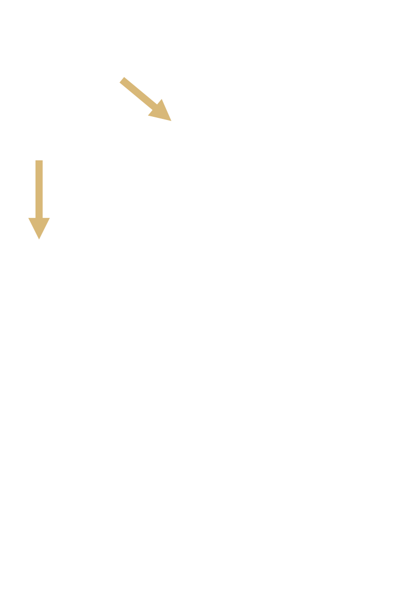
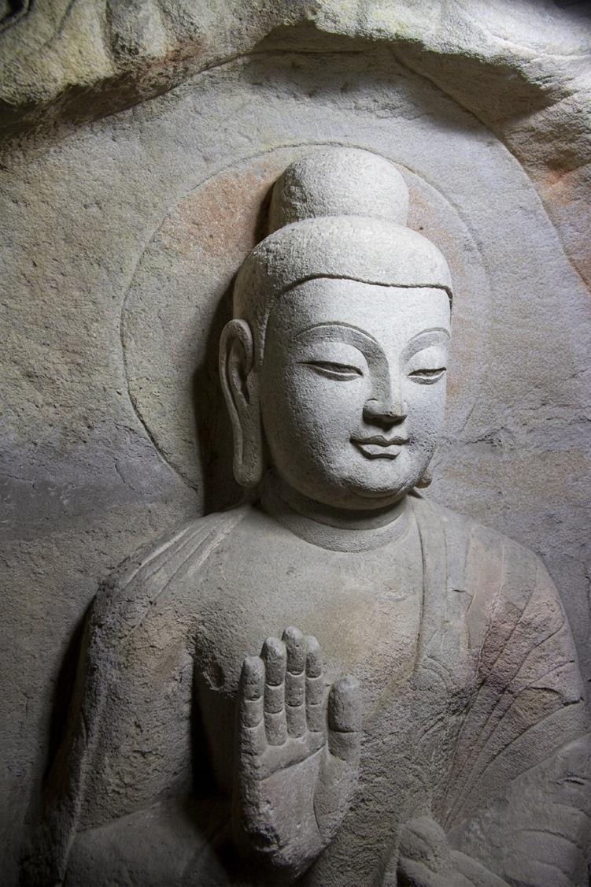

Multiscale reference edge maps
Extract multiscale edge maps from spatially corresponding statues, historical photographs, and stylistically related sculptures.
Generative restoration can produce visually convincing images, yet unsupported decorative details may compromise structural fidelity in cultural heritage images. We present an Expert-in-the-loop Cultural Heritage image RestOration (ECHO) method that separates structural reasoning from appearance generation within a unified framework. ECHO combines surviving evidence, references across space and time, and expert knowledge. The references include spatially corresponding statues, historical photographs of the same artifact, and stylistically related statues from comparable periods. ECHO extracts multiscale reference edge maps, completes the target structure through expert review and iterative refinement, and generates the restored image conditioned on the damaged image and approved structure. The intermediate edge map provides an inspectable interface for structural control before texture and illumination are synthesized. Experiments on images of damaged Buddha and caisson carvings at Yungang Grottoes demonstrate the effectiveness of ECHO compared with recent baselines.



Damaged input ECHO restoration · under the lampECHO separates structural completion from appearance generation through an expert-reviewed target edge map.
Extract multiscale edge maps from spatially corresponding statues, historical photographs, and stylistically related sculptures.
Complete the target edge map using surviving evidence and selected references. Experts review and refine its contours and connections.
Generate the restored image from the damaged photograph and approved edge map with an adapted FLUX.2 Klein Base 9B model.

GUO-246 contains 246 photographs of bas-relief carvings at Yungang Cave 7: 96 contemporary and 150 historical. The synthetic-damage collection provides 114 triplets — each with an original photograph, a complete edge map, and a synthetically damaged image.
Loading 96 photograph / edge-map pairs…
Select a photograph to compare its photograph / edge-map pair; hover to reveal the edge map.
Loading 150 photograph / edge-map pairs…
Select a photograph to compare its photograph / edge-map pair; hover to reveal the edge map.
Hanging the collection…
Select a piece to view the original photograph, complete edge map, and synthetic damage.
Qualitative comparisons and user study results on damaged caisson and Buddha images.

User preferences (%) from 41 participants across 14 test images.
| Method | Preservation | Plausibility | Quality |
|---|---|---|---|
| PhyEdit | 1.74 | 1.74 | 1.22 |
| RefineAnything | 21.08 | 18.82 | 11.32 |
| BAGEL | 1.05 | 1.05 | 1.05 |
| Nexus-Gen | 0.52 | 0.70 | 0.35 |
| ECHO(ours) | 75.61 | 77.70 | 86.06 |




If you use GUO-246 or the ECHO method in your research, please cite:
@misc{guo2026echo,
title = {Echoes Across Millennia: Expert-in-the-Loop Image
Restoration with Spatiotemporal References},
author = {Guo, Chun and Zeng, Jiangyue and Yang, Wenhan
and Yang, Shuai and Liu, Jiaying},
year = {2026},
url = {https://godric-2025.github.io/StatueRestoration/}
}